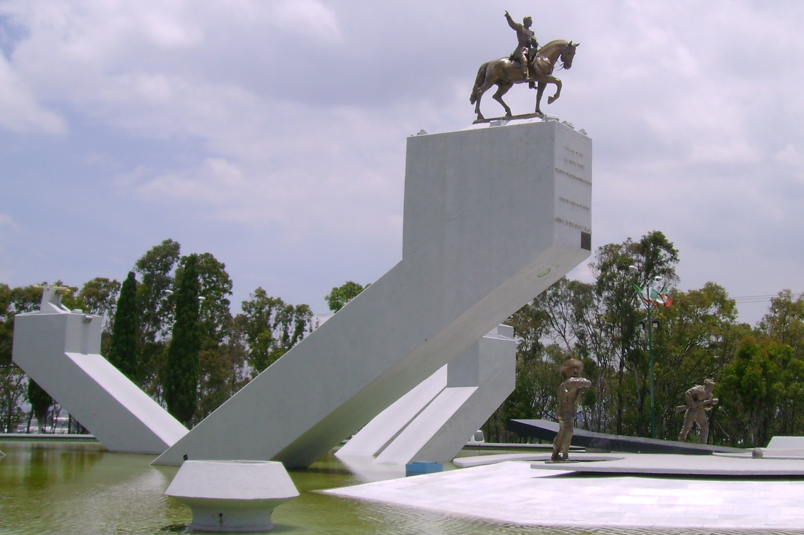

La Batalla de Atlixco tuvo lugar el 4 de mayo de 1862 en las inmediaciones de la Hacienda de las Traperas en Atlixco en el estado de Puebla, México, entre elementos del ejército mexicano de la república, al mando de los generales Antonio Carvajal y Tomás O'Horan contra las tropas al servicio del Segundo Imperio Mexicano comandadas por el general José María Cobos y de Leonardo Márquez, compuesta de soldados conservadores mexicanos en apoyo de envío de refuerzos para llevar a cabo la Batalla de Puebla, durante la Segunda Intervención Francesa en México.
Esta batalla culminó con una victoria republicana y debido a esto el grupo conservador de Márquez no pudo lograr su objetivo de auxiliar a las tropas francesas del Conde de Lorencez en la batalla de Puebla.

El 5 de mayo a las 9:15am aparecen los franceses en el horizonte pero no es sino hasta las 11:15am cuando comienzan las hostilidades anunciándose con un cañonazo desde el Fuerte de Guadalupe y acompañado por los repiques de las campanas de la ciudad.
Los Fuertes de Loreto y Guadalupe:

El conde de Lorencez ordena una maniobra sorpresiva que divide a la columna francesa en dos y que da como resultado a 4,000 hombres marchando para atacar los Fuertes de Loreto y Guadalupe. Esta decisión pudo ser la causa de la derrota francesa ya que los mexicanos contaban con la ventaja en estas posiciones.
El 6o. Batallón de la Guardia Nacional del Estado de Puebla, bajo el mando del entonces coronel Juan Nepomuceno Méndez, fue el primer cuerpo del Ejército de Oriente en hacer frente a los franceses, al ubicarse en la línea comprendida entre los fuertes, y rechazar su ataque.
Varios embates franceses fueron repelidos por la resistencia del Ejército Mexicano como es el caso de los zuavos, el regimiento de élite de la infantería francesa, quienes iniciaron un sigiloso ascenso hacia el Fuerte de Guadalupe pero fueron recibidos con bayonetas y obligados a retroceder.
A las dos y media de la tarde, cuando los mexicanos empezaban a vislumbrar la victoria, Lorencez se dispuso a lanzar el último asalto, dirigiendo a los Cazadores de Vincennes y el Regimiento de Zuavos hacia Guadalupe. Zaragoza dispuso que el Batallón Reforma de San Luis Potosí saliera en auxilio de los fuertes.
Luego de ser repelidos por última vez, las fuerzas del Ejército Expedicionario Francés comenzaron a huir completamente dispersados. Se replegaron a la hacienda Los Álamos, para finalmente retirarse hacia Amozoc.
En octubre de 1861, Francia, Inglaterra y España suscribieron la Convención de Londres, en la cual se comprometieron a enviar contingentes militares a México para reclamar sus derechos como acreedores por una deuda que ascendía a alrededor de 80 millones de pesos, de los que aproximadamente 69 millones corresponderían a Inglaterra, 9 millones a España y 2 millones a Francia.
Poco después de reunirse, los representantes de los tres países enviaron un ultimátum al gobierno mexicano en el que pedían el pago de sus deudas; de lo contrario, invadiría el país. Juárez, quien gobernaba a un país que apenas empezaba a levantarse de la postración económica, respondió con un exhorto a lograr un arreglo amistoso, y los invitó a una conferencia.
Los representantes aceptaron el llamado y en febrero de 1862 se reunieron con los ministros juaristas del Exterior, Manuel Doblado, y de Guerra, Ignacio Zaragoza, en la hacienda de La Soledad, cerca de Veracruz. Gracias a la habilidad como negociador de Doblado se firmaron los Tratados preliminares de La Soledad, en los que se obtuvo el reconocimiento como interlocutor para el gobierno de Juárez y se garantizó el respeto a la integridad e independencia del país.
el 2 de mayo de 1862 la columna principal del ejército expedicionario francés salió de San Agustín del Palmar, en Veracruz, para cruzar la Sierra Madre Oriental y dirigirse hacia Puebla, paso obligado para llegar a la capital del país y que era además uno de los bastiones del Partido Conservador, donde esperaban ser recibidos "con una lluvia de rosas", como le aseguró Saligny a Napoleón III en una carta.
El 3 de mayo por la noche, el general Zaragoza arribó a Puebla, dejando en su retaguardia una brigada de caballería para hostigar a los invasores. Los efectivos del Ejército de Oriente se organizaron por las calles desiertas de la ciudad, ya que la mayoría de la población era partidaria de la invasión.5
El 4 de mayo, los exploradores mexicanos volvieron con noticias de que una columna de conservadores a caballo, al mando de Leonardo Márquez y José María Cobos, marchaba por la zona de Atlixco para unirse con las fuerzas de Lorencez en el ataque a Puebla.
El 5 de mayo, los franceses aparecieron en el horizonte, avanzando desde la cercana Hacienda de Rementería, cruzando fuego con las guerrillas de caballería que se batían en retirada y que no se replegaron hasta que las líneas francesas estuvieron formadas y listas para avanzar.


Ignacio Zaragoza Seguin
Fue un militar mexicano reconocido como el héroe de la Batalla de Puebla, que tuvo lugar el 5 de mayo de 1862, cuando el ejército mexicano derrotó al ejército francés de élite al mando de Charles Ferdinand Latrille.
Ignacio Zaragoza

Tomás O'Horán Escudero
fue un general en las fuerzas armadas mexicanas que lucharon durante la intervención francesa en México en 1862, distinguiéndose durante el sitio a la ciudad de Puebla.
Tomás O'Horán Escudero

José de la Cruz Porfirio Díaz Mori
fue un militar mexicano, que ejerció el cargo de presidente de México. Nuevamente. Antes de asumir la presidencia fue un militar destacado que brilló por su participación en la Segunda Intervención Francesa en México. Combatió en la Batalla de Puebla, el Sitio de Puebla.
Porfirio Díaz

Miguel Negrete Novoa
fue un militar mexicano, participó durante las guerras civiles del siglo XIX, así como durante las intervenciones de Estados Unidos y Francia. Fue ministro de Guerra durante la presidencia de Benito Juárez.
Miguel Negrete Novoa

“Monumento Emblemático” del 150 Aniversario de la Batalla de Puebla.

Monumento a Ignazio Zaragoza
victoria del 5 de mayo


 2
2 4
4 5
5 7
7 8
8